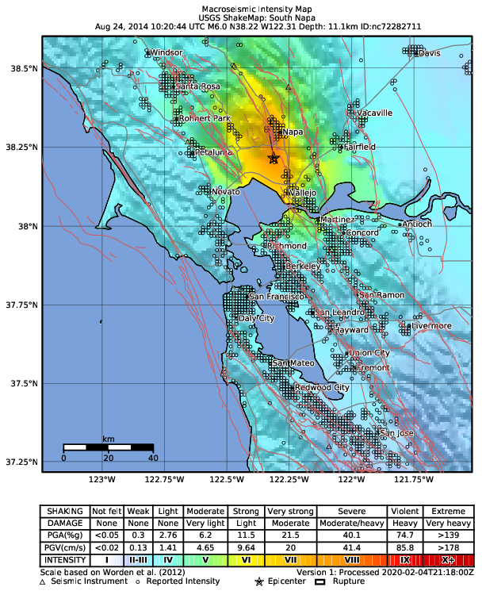
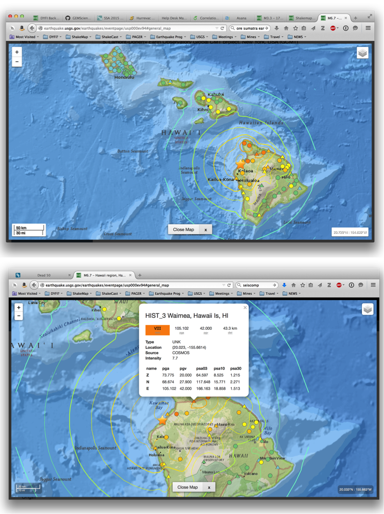

Recorded Ground-motion Parameters¶
Data Acquisition¶
ShakeMap requires estimates of magnitude, location, and (optionally, but preferably) shaking intensity measures (IMs) at seismic stations. As such, ShakeMap has been interfaced with several types of seismic processing systems in wide use at numerous networks across the U.S. and around the world, including Antelope, SeisComP3, and AQMS. The ShakeMap system, however, is a stand-alone software package and is really a passive consumer of seismic data. In other words, the ShakeMap software itself contains no data acquisition component. It is assumed that ShakeMap earthquake source information and parametric data are packaged for delivery to ShakeMap and that that delivery will trigger a ShakeMap run. The required format is an XML format, as fully described in the Input Data Formats section. ShakeMap will also accept a JSON format that is the output stationlist.json format (or a subset thereof). See ShakeMap JSON Data File for a description of this format. It is assumed that station data delivered to ShakeMap are free-field sites that have been vetted by the contributing network. Each station must have stand-alone metadata describing its station location, contributing network, channel, and location code. While some additional outlier and data quality checks are performed within ShakeMap (see Data Processing), it is assumed that this is primarily the responsibility of the contributing seismic network.
For global and historic earthquake ShakeMap generation, we have developed scripts to preprocess various forms of seismic waveform (as well as macroseismic) data which are openly available around the world. For example, we provide a Python repository of programs that run independently of ShakeMap, and can generate the parametric data that ShakeMap requires. The Groundmotion Processing system was developed independently of ShakeMap, but with the intention of producing data in the ShakeMap input formats (as well as other useful formats).
For illustrative purposes, we describe the data acquisition for the seismic system in Southern California, a component of the California Integrated Seismic Network (CISN). For perspective, as of 2020, there were nearly 800 real-time stations jointly operated with a collaboration between the USGS and the California Institute of Technology (Caltech). In addition, the California Geological Survey (CGS) contributes nearly 350 strong-motion stations in near real-time, utilizing an automated telephone dial-up procedure (Shakal et al, 1998), and the USGS National Strong Motion Instrumentation Program (NSMP) contributes dial-up station parameters as well, with nearly 50 stations in Southern California alone. Lastly, the “NetQuakes” program, a relatively low-cost seismograph that the USGS installs in homes, businesses, buildings, and schools, contributes close to 100 additional stations in Southern California.
Generation of ShakeMap in Southern California is automatic, triggered by the event associator of the seismic network. Within the first two minutes of an earthquake, ground-motion parameters are available from the USGS-Caltech component of the network, and within several minutes most of the important near-source CGS and NSMP stations contribute; a more complete CGS and NSMP contribution is available within approximately ten minutes of an event. Initial maps are made with the real-time component of CISN as well as any of the available dial-sites, and they are updated automatically as more data are acquired.
Derived Parametric Ground-motion Values¶
Parametric data from stations serving ShakeMap should include peak ground acceleration (PGA), peak ground velocity (PGV), and peak response spectral acceleration amplitudes (at 0.3, 1.0, and 3.0 sec). Often, parametric values are derived continuously, using recursive time-domain filtering as described by Kanamori et al. (1999). Otherwise parameters are derived from post-processing as described by Shakal et al. (1998) and Converse and Brady (1992).
ShakeMap will run successfully with no (or limited) parametric data, for example if only PGA values are available at each station. Default logic is employed to provide reasonable behavior for estimating intensities from PGA alone, bias correction, and interpolation (see following sections). Likewise, for smaller-magnitude earthquakes, spectral values can be noisy, so operators often omit the generation spectral maps below a lower magnitude threshold (about M4), although this constraint has been relaxed as ever-better instrumentation has become available.
For all maps and products, the motions depicted are peak values as observed; that is, the maximum value observed on the two horizontal components of motion. Many engineers are accustomed to analyses employing the geometric mean of the horizontal peak-ground motions, but that parameter is not, by default, computed by most ShakeMap systems. More description and justification for this strategy is given in the section Use of Peak Values Rather than Mean. It should be noted, however, that conversions from peak to geometric mean [or orientation-independent parameterizations (Boore, 2010)] are available (e.g., Boore and Kishida (2017), Beyer and Bommer, 2006).
The ShakeMap software iteslf is capable of producing maps of any number of intensity measure components other than greater-of-two-horizontals, including geometric mean, rotation-independent measures such as RotD50, etc. The system merely needs the appropriate input data and configuration, as well as modules to produce the proper spatial cross-correlations and MMI conversions.
Macroseismic Intensity¶
ShakeMap also (optionally) accepts input data in the form of observed macroseismic intensity (MMI, MCS, etc.). As with peak ground motion parameters from seismic stations, ShakeMap expects specific file formats (XML, JSON) and site metadata for macroseismic data (see the section Input Data Formats).
Intensity data can fill important gaps where ground-motion recordings are not available, and often provide the only control in sparsely instrumented areas. This is particularly true for historic earthquakes, for which macroseismic data provide important constraints on shaking intensities. As later discussed, the ShakeMap Atlas (Allen et al., 2008, 2009a; Garcia et al., 2012a) is a collection of important historic earthquake shaking maps which are now widely used for scientific analyses and for loss model calibration (e.g., Wald et al., 2008; Jaiswal and Wald, 2010; Pomonis and So, 2011).
The most common source for immediate post-earthquake intensity data is the USGS’s “Did You Feel It?” (DYFI) system (Wald et al., 2011), though similar systems are available in several countries. However, traditionally assigned intensities may be used as well. DYFI data can be programmatically retrieved from the USGS’s database and formatted for ShakeMap input using the ShakeMap module dyfi, making it especially easy to incorporate into the ShakeMap data input stream.
Macroseismic intensity data can also be an important constraint on peak ground motions, since ground motion amplitudes can be derived from intensity through the use of a suitable Ground-Motion/Intensity Conversion Equation (GMICE). Because a GMICE represents a statistical (probabilistic) relationship, the conversion to and from intensity has a higher uncertainty than direct ground-motion observation. ShakeMap accounts for this higher uncertainty by down-weighting converted observations in the interpolation process, as discussed in the Ground Motion to Intensity Conversions section.
A variety of GMICEs are available with the ShakeMap software distribution, both for MMI—based on Wald, et al. (1999b), Worden, et al. (2012), and Atkinson and Kaka (2007), among others—and for MCS—based on Faenza and Michilini (2010). Operators are encouraged to explore the need to develop their own relationships based on data covering their own operational area as GMICEs have been shown to have regional dependencies (e.g., Caprio et al., 2015). A complete list of GMICEs currently employed by ShakeMap is provided in the shakelib/gmice directory of the ShakeMap software package.
We have implemented a convention for maps and regression plots that seismic stations are represented with triangles and macroseismic data are depicted with circles (see Fig. 1.1, for example). This convention is forward-looking: not all seismic networks were currently following this convention at the time of this writing.

Fig. 1.1 Intensity ShakeMap from the 2014 M6.0 American Canyon (Napa Valley), CA earthquake. Strong motion data (triangles) and intensity data (circles) are color-coded according to their intensity value, either as observed (for macroseismic data) or as converted by Worden et al. (2012) as shown in the legend. The north-south black line indicates the fault location, which nucleated near the epicenter (black star). Note: Map Version Number reflects separate offline processing for this Manual.¶
Fig. 1.2 shows a different representation of the intensity map on the newer, interactive maps on the USGS web site.

Fig. 1.2 Intensity ShakeMap from the 2006 M6.7 Kahola Bay, HI earthquake. Contours indicate intensities; strong motion data (triangles) and intensity data (circles) are color-coded according to their intensity value, either as observed (for macroseismic data) or as converted by Worden et al. (2012). Inset on lower map shows pop-up station information.¶